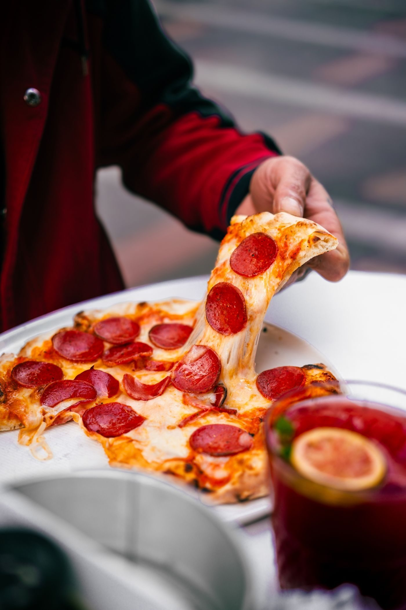
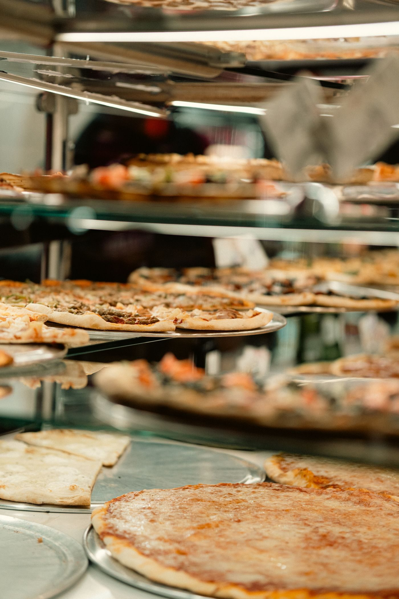
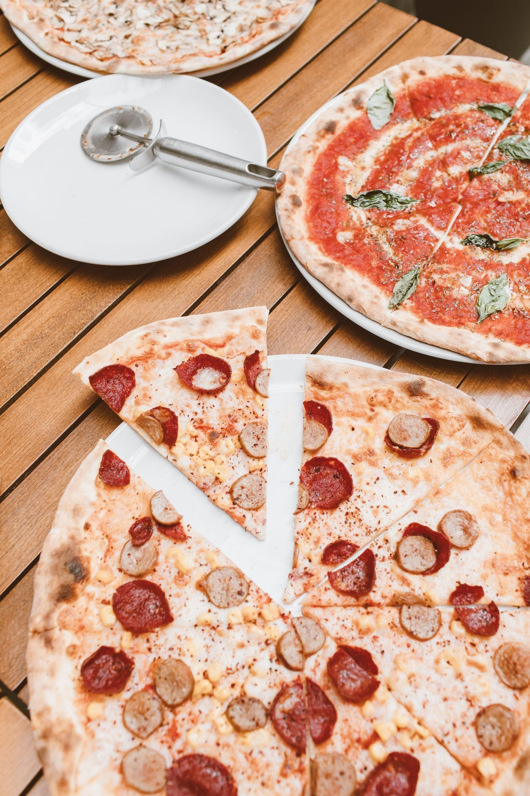

Downtown Memphis, Tennessee
A New York-style pizza shop in downtown Memphis making its dough fresh daily, with specialty pies, garlic knots, and cannoli, plus dine-in, outdoor seating, delivery, and catering and private events.

Aldo's Pizza Pies is a New York-style pizza shop in downtown Memphis. Its dough is made fresh daily. The shop offers specialty pies, garlic knots, and cannoli, with dine-in, outdoor seating, delivery, and catering and private events.


100 S Main St Ste 101, Memphis, TN 38103
Downtown: Sunday to Saturday 11 AM to 10 PM